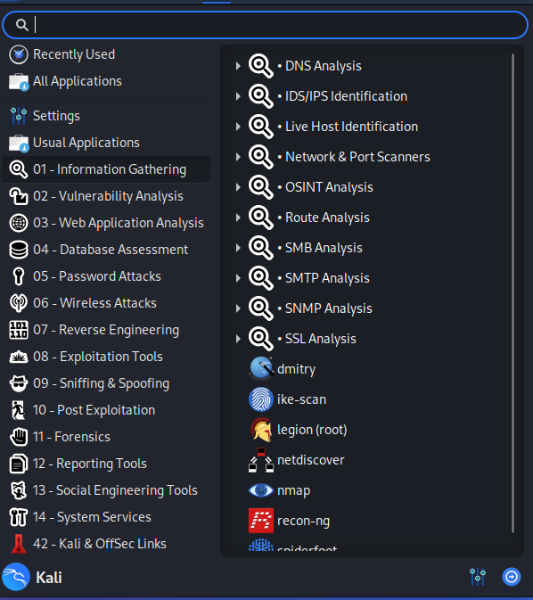

Kali Linux
Here is the URL to the Kali page: https://www.kali.org/
My opinion: Should you use Kali?
Overall, yes, I believe you should take a look at Kali once you are done with Penting (of course you are welcome to look at other pentesting based VMs), I belive Kali is the best. Read on for infomration regarding Kali
What is Kali?
Kali Linux is a wonderful VM designed for penetration testing (and security auditing). When people think about pen testing VMs, Kali Linux is always the first VM that comes to mind. Although there are other VMs available online, Kali is considered the go to VM, the cream of the crop – and for good reason too, it’s very well made.
Kali Linux is an open source debian based Linux distribution, that gets regularly updated (normally getting
around 3-4 big updates a year), meaning the tools on the VM are kept up to date as time (whilst at the same
time adding any QOL updates to the VM).
It’s also free, meaning absolutely no costs involved (unless you pay for it using cloud/Amazon AWS, in which
case it cost pennies).
This means it’s free and easy to try out ! Just keep in mind, the penetration
tools on the VM can still be used to cause harm so be careful about misuse.
Kali Linux basically has a very large number of tools strapped to it, pre-installed, no configuration required.
Not just that, many tools have also been designed with Kali in mind, meaning the tool would be ‘good to go out
the box’ as soon as you install it (and do any required configurations). This makes trying out any tools a
leisurely task.
Let’s say you find out about a new tool, and you want to try it out. Odds are Kali Linux may already have it
installed, so all you would need to do is enter the command name.
On the off chance the tool isn’t installed on Kali, you would most likely download the tool from the GitHub
page. In the read me/description of on page would contain a set of instructions on how to download and use
the tool on Kali.
Should you use Kali?
Kali Linux is not as user friendly as Ubuntu. This is what the home screen looks like, it’s very barren.
For more experienced penetration testers, people prefer it this way, however a new penetration tester may get lost.
The start menu is also quite cluttered. If a beginner penetration tester looked at the start menu they may
become barraged by the sheer volume of tools. In the screenshot below, each tab on the left is a folder.
The tools would then be shown on the right. If there are multiple tools of the same purpose, they would then
be grouped up in their own folder.

On the Penting VM, only around 5 tools have been installed. Kali Linux, on the other hand, has around 600+.
Chances are you won’t even touch most of said tools (that doesn’t mean those tools are useless, it just means
they are not currently relevant). As such, having 600+ tools on a VM were only a very small number would actually
be used for a guide would be a waste of resources and may needlessly overwhelm the user.
Another thing that’s also begun to happen in the past couple of years is Kali has started to remove its
teaching/learning aspects, turning more purely into a penetration toolkit. It also doesn’t offer any
vulnerable services by default.
NB: When people talk about Kali Linux, they are most likely referring to the virtual machine.
The reason I am mentioning this is because there is now a large range of Kali products. They are all however,
still Kali Linux, they just have a different paint colours.
Although you are unlikely to try any of the other
variants, it's still a nice thing to know about.